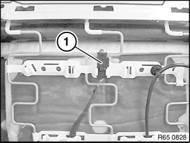
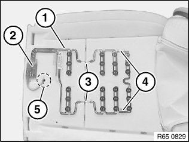

65 77 600 Replacing Sensor MAT For Front Passenger Seat Occupancy Detector
65 77 600 Replacing Sensor Mat For Front Passenger Seat Occupancy Detector

WARNING:
Note airbag safety instructions.
Incorrect handling can activate airbag and cause injury.
WARNING:
US/CDN front passenger seat (with OC3 mat) only:
A defective OC3 mat may only be replaced complete with the padding and the seat cover.
New OC3 mat is supplied with padding, seat cover and if necessary seat heating.
After fitting, the OC3 mat must be enabled with the diagnosis system.
Individual parts not available.

Release seat occupancy detector:
- Connect diagnosis system
- Release seat occupancy detector
- Clear fault memory if necessary

Necessary preliminary tasks:
- Remove seat cover for right front seat

Disconnect plug connection (1).
IMPORTANT: To prevent the seat occupancy detector electronics box from slipping, do not pull too strongly on the cable.

Cut front sticking surface (4) in area on sensor mat (1) with cutter knife or heavy-duty scalpel from foam without damaging the foam and the sensor mat.
If necessary, also cut away deviating sticking points from seat padding without incurring damage.
Remove sensor mat (1) and feed out electric lead.
Installation:
Observe installation sequence:
- Align new sensor mat (1) to seat padding
- Guide cable in area (5) through hole penetration for seat padding
- Press sensor mat down to base of basting groove in area (3) and align again
- Carefully staple cross trim wire of seat cover to holding wire of seat padding
- Sensor mat must not be able to move and must be checked again
- Pull all protective foil off sensor mat adhesive strips and stick to seat padding
IMPORTANT:
In order to guarantee the function and fastening (adhesive strength) at the sticking surfaces of sensor mat (1), the foam must not show any traces of damage.
Replace the foam if it is hardened or damaged particularly in the area of the sticking surfaces.
To prevent the electronics box (2) from slipping, do not pull cable too strongly through hole penetration (5).